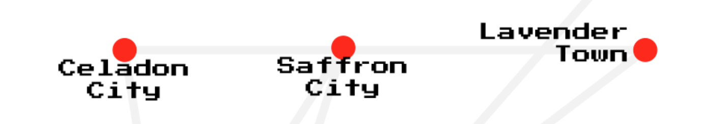
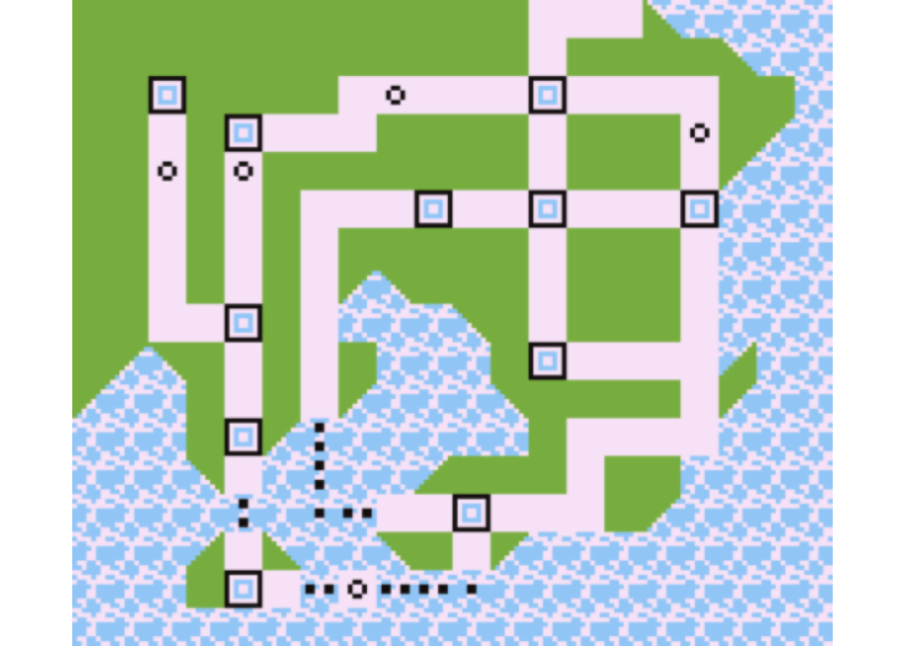
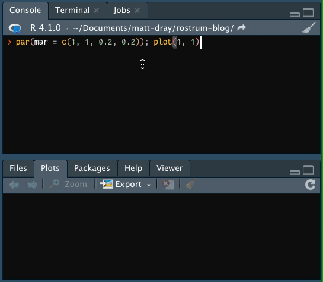
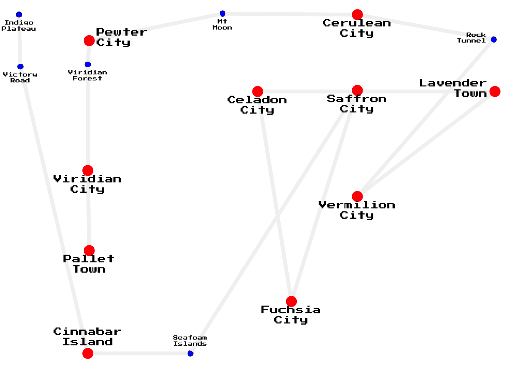
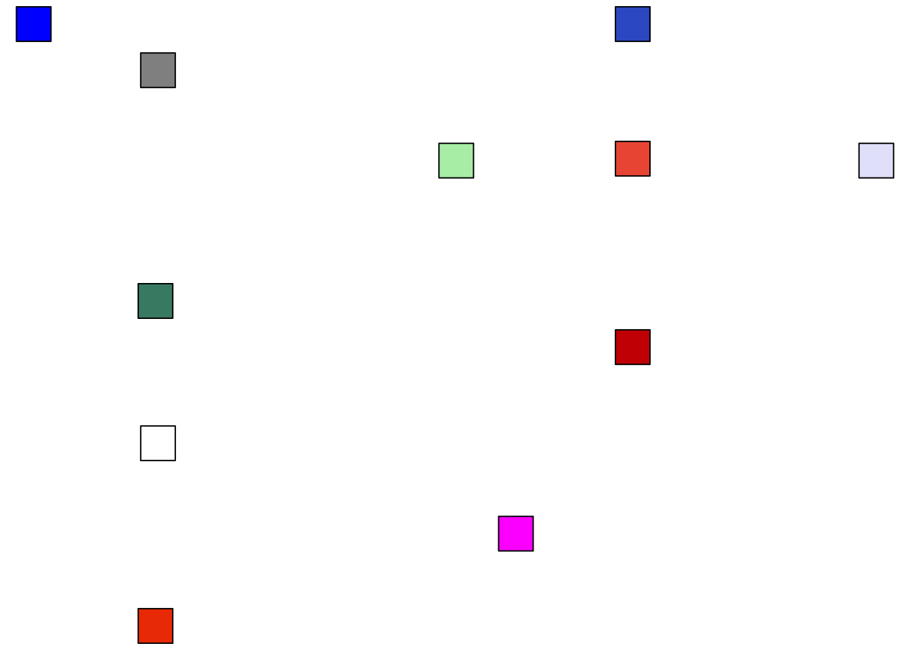
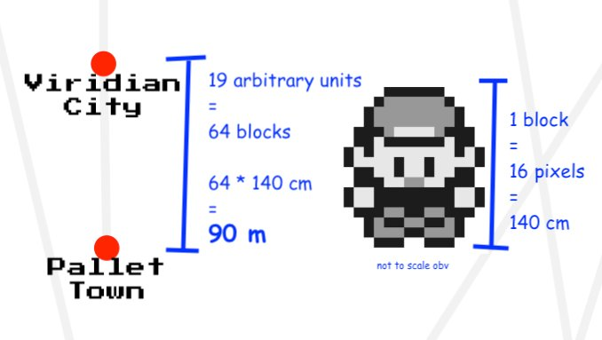

plot_map <- function(png_path) {
# Return to user's par settings once done
original_par <- par()["mar"]
on.exit(par(original_par))
# Download and read image
tmp <- tempfile(fileext = ".png")
download.file(png_path, tmp, quiet = TRUE)
img <- png::readPNG(tmp)
unlink(tmp) # clean up
# Set up canvas and plot
par(mar = rep(0, 4)) # remove margins
plot.new() # start new plot frame
grid::grid.raster(img, x = 0.5, y = 0.5)
}
tl;dr
Use the locator() function in R to interactively extract arbitrary coordinates from images of imaginary maps. I extracted points of interest from Kanto in the original Pokémon games.
On the road to Viridian City
There are lots of interesting fictitious maps. For example, Middle Earth from Lord of the Rings, Hyrule from The Legend of Zelda and Sodor from Thomas the Tank Engine.
This is excellent fodder for fan-made recreations. I’ve thought before about how I would do this programmatically, but there’s one particularly awkward thing: how can you grab location coordinates from an image of your chosen map?
This post outlines a pretty low-effort method for doing this in R. Basically there’s two steps: (1) read and plot an image of a map and (2) click locations interactively to record their coordinates. I’m going to do this with a Pokémon example for simplicity, but also because have you ever visited this blog before?
Get map
For my own convenience, I’ve written a function that downloads a PNG of a map from the web and plots it. This requires {png} and {grid} packages.
To be specific, I’m using the in-game ‘town map’ of the fictitious Kanto region from the first generation of Pokémon Red and Blue for the Nintendo GameBoy,1 downloaded from Bulbapedia. This is good for a demo: the locations are pretty discrete, obvious and clickable.
kanto_path <-
"https://cdn2.bulbagarden.net/upload/8/86/Kanto_Town_Map_RBY.png"
plot_map(kanto_path)
You might be thinking that it looks like a schematic map—an abstraction of actual geography—like the London underground map. In fact, the town map is pretty similar to the actual in-game world layout, as demonstrated by folks who have stitched together all the overworld screens.
Get points
With the Kanto map drawn in our active plot window, we can run a function to prompt the user to click on points and record their coordinates.
locate_points <- function(places) {
places_list <- vector("list", length(places)) |>
setNames(places)
for (i in places) {
cat(paste0("Click on ", i, "... "))
places_list[[i]] <- locator(1, type = "p")
cat("found.\n")
}
places_df <- do.call(rbind, places_list) |>
data.frame()
}This is not magic. It is merely powered by the locator() function, which records the x and y location of a point clicked on a plot by the user.2
Here’s a simplified version of what’s going on when you use locator(). If you make a plot and call the function, then the top of the plotting window in RStudio says ‘locator active’ and your cursor becomes crosshairs. Clicking on the plot returns a list of the x and y coordinates within the plotting space. The first argument is the number of clicks to collect before the locator is deactivated automatically.

For our bespoke locate_points() function, we can pass a character vector of place names. For this demo, that’ll be Kanto’s towns, cities and other places of interest. The function loops through the locations and requests you to click the corresponding point on the map. The console will read like Click on Pallet Town... and then found once you’ve clicked it.
kanto_names <- c(
"Pallet Town", "Viridian City", "Viridian Forest", "Pewter City",
"Mt Moon", "Cerulean City", "Rock Tunnel", "Vermilion City",
"Lavender Town", "Celadon City", "Fuchsia City", "Saffron City",
"Seafoam Islands", "Cinnabar Island", "Victory Road",
"Indigo Plateau"
)
kanto_pts <- locate_points(kanto_names) # initiates clicking promptsClick on Pallet Town...During the clickfest, the locate_points() function has assembled the points lists into a data.frame with one row per location. The locations vector was passed as the rownames of the dataframe as well. Here’s the full list of collected coordindates.
kanto_pts x y
Pallet Town 0.2470187 0.30648777
Viridian City 0.2451179 0.50103940
Viridian Forest 0.2451179 0.75868886
Pewter City 0.2470187 0.81652853
Mt Moon 0.4275933 0.88225543
Cerulean City 0.6100688 0.87962636
Rock Tunnel 0.7944450 0.81915761
Vermilion City 0.6100688 0.43794158
Lavender Town 0.7963458 0.69296196
Celadon City 0.4751130 0.69296196
Fuchsia City 0.5207318 0.18292120
Saffron City 0.6100688 0.69559103
Seafoam Islands 0.3838752 0.05672554
Cinnabar Island 0.2451179 0.05672554
Victory Road 0.1538802 0.75343071
Indigo Plateau 0.1519794 0.87962636The coordinate values are between 0 to 1 because those are the default x- and y-axis limits that were set up in plot_map(). They’re remarkably precise, but the resolution on the image wasn’t great and my hand-eye coordination is bad, so take these with a grain of salt.
Plot
So! You can now plot the coordinates independently. To demonstrate, I’ve plotted the points and added a label whose style is dependent on the type of location. I’ve added lines to join the locations in the order they appear in a normal playthrough.
kanto_pts$city <- ifelse(
grepl("Town|City|Island$", rownames(kanto_pts)),
TRUE, FALSE
)
par(mar = rep(0, 4))
with(kanto_pts, plot(x, y, axes = FALSE))
with(kanto_pts, lines(x, y, col = "grey95", lwd = 5))
points(
kanto_pts$x, kanto_pts$y,
pch = 16,
cex = ifelse(kanto_pts$city, 2, 1),
col = ifelse(kanto_pts$city, "red", "blue")
)
text(
kanto_pts$x, kanto_pts$y,
gsub(" ", "\n", row.names(kanto_pts)),
cex = ifelse(kanto_pts$city, 0.7, 0.4),
pos = c(1, 1, 1, 4, 1, 1, 2, 1, 2, 1, 1, 1, 3, 3, 1, 1),
family = "Press Start 2P" # installed locally from Google Fonts
)
It might also be fun to do a minimal map of the cities where the points are coloured according to the name of the city. You may have noticed that the city names are all fancy colour names (viridian, fuchsia, etc), so let’s use them. Well, except Pallet, for which can just use a mix of all colours, i.e. white.
kanto_colour <-
kanto_pts[kanto_pts$city |
rownames(kanto_pts) == "Indigo Plateau", ]
kanto_colour$city_col <- c( # close-enough named R colours
"white", "aquamarine4", "grey57", "royalblue3 ",
"red3 ", "lavender", "darkseagreen2", "magenta",
"tomato2", "orangered2", "blue"
)
par(mar = rep(0, 4))
with(kanto_colour, plot(x, y, axes = FALSE))
with(kanto_colour, points(x, y, pch = 22, cex = 4, bg = city_col))
I’ll admit I struggled to make this given my colourblindness, but also because I had no prior notions of what colours like ‘vermilion’ and ‘celadon’ are. Actually they kind of sound more like Pokémon names.
Anyway, these ‘maps’ are the first steps to create something more exciting. For now they demonstrate the point (literally, lol). Plus they fulfil my belated submission for day one of the #30DayMapChallenge (‘points’).
Distances
But wait, there’s more.
So, obviously, why not work out the distances between towns? Not in arbitrary units, but in actual metres. There’s a few ways we could do this, but basically I’m going to peg a pixel to a known length.3
First, we can create a lookup table of the straight-line ‘distances’ between locations, given our arbitrary 0 to 1 dimensions. We want to avoid being precise with these values (they’re only as good as my ability to click a tiny square on a computer screen), so I’m multiplying and rounding them.
kanto_dist <- raster::pointDistance(
kanto_pts[, c("x", "y")],
lonlat = FALSE
) |>
as.data.frame() |>
round(2) * 100The legacy packages maptools, rgdal, and rgeos, underpinning the sp package,
which was just loaded, will retire in October 2023.
Please refer to R-spatial evolution reports for details, especially
https://r-spatial.org/r/2023/05/15/evolution4.html.
It may be desirable to make the sf package available;
package maintainers should consider adding sf to Suggests:.
The sp package is now running under evolution status 2
(status 2 uses the sf package in place of rgdal)names(kanto_dist) <- kanto_names
rownames(kanto_dist) <- kanto_names
kanto_dist[1:3, 1:3] # first few Pallet Town Viridian City Viridian Forest
Pallet Town 0 19 45
Viridian City 19 0 26
Viridian Forest 45 26 0These values are the number of arbitrary distance units between pairs of locations, which are given by the row and column headers. So, Pallet Town to Viridian City is 19 arbitrary units.
Based on my own measurements, the centre of Pallet to the centre of Viridian is 64 in-game ‘blocks’, where a block is a 16- by 16-pixel square.4
It just so happens that the player-character sprite fills a single block5 and we know that the character is probably about 140 cm tall.6
That means Pallet to Viridian is about 64 * 140 cm = 8960 cm. So, one of our arbitrary units equals 8960 cm / 19 = 472 cm. Now we can correct our distance lookup.
kanto_dist_m <- round(kanto_dist * 472 / 100)
kanto_dist_m[1:3, 1:3] # first few Pallet Town Viridian City Viridian Forest
Pallet Town 0 90 212
Viridian City 90 0 123
Viridian Forest 212 123 0Once again I’ve removed some precision by calculating the result as a rounded distance in metres. Coward.

So this means we can now say some really profound things like it’s about 90 m from Pallet Town to Viridian City. Maybe that’s true in the context of the game’s dimensions, but it’s… underwhelming.
Was this scuffed distance-conversion exercise worthwhile? No.
But it might strengthen my belated submission to day two of the #30DayMapChallenge (‘lines’)?
Environment
Session info
Last rendered: 2023-07-21 18:39:24 BSTR version 4.3.1 (2023-06-16)
Platform: aarch64-apple-darwin20 (64-bit)
Running under: macOS Ventura 13.2.1
Matrix products: default
BLAS: /Library/Frameworks/R.framework/Versions/4.3-arm64/Resources/lib/libRblas.0.dylib
LAPACK: /Library/Frameworks/R.framework/Versions/4.3-arm64/Resources/lib/libRlapack.dylib; LAPACK version 3.11.0
locale:
[1] en_US.UTF-8/en_US.UTF-8/en_US.UTF-8/C/en_US.UTF-8/en_US.UTF-8
time zone: Europe/London
tzcode source: internal
attached base packages:
[1] stats graphics grDevices utils datasets methods base
loaded via a namespace (and not attached):
[1] digest_0.6.33 codetools_0.2-19 fastmap_1.1.1 xfun_0.39
[5] lattice_0.21-8 knitr_1.43.1 raster_3.6-20 htmltools_0.5.5
[9] png_0.1-8 rmarkdown_2.23 cli_3.6.1 terra_1.7-39
[13] grid_4.3.1 compiler_4.3.1 rstudioapi_0.15.0 tools_4.3.1
[17] sp_2.0-0 evaluate_0.21 Rcpp_1.0.11 yaml_2.3.7
[21] rlang_1.1.1 jsonlite_1.8.7 htmlwidgets_1.6.2Footnotes
Yes: I recreated the ‘Safari Zone’ from this game as a playable text adventure in R and even threw in an RStudio theme to mimic the original puke-green GameBoy screen.↩︎
I was thinking about this function recently because I remember being taught to use it to help place labels on a plot. Then I saw it appeared in Tomaz’s post for creating interactive, self-updating Voronoi maps and I took it as a sign to make something with it too.↩︎
As it happens, in-game Kanto is based on the real-life Kanto region of Japan. That means another approach might be to measure approximate distances by overlaying the in-game map over real-life Japan.↩︎
Of course, the relative in-game scales are a bit weird. For example, some single-storey houses are only twice the height of the player. It also implies the whole of Kanto is only a few kilometres wide. But, y’know, it’s a retro videogame, so.↩︎
You can make little animated sprites in R, don’t you know?↩︎
4 feet 7 inches, if you prefer. This does seems quite short, although he is meant to be 10 years old.↩︎
Reuse
CC BY-NC-SA 4.0